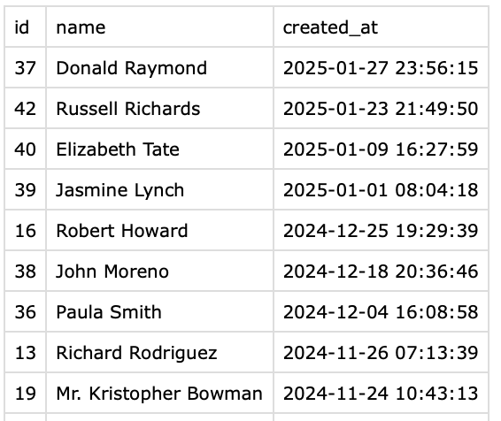
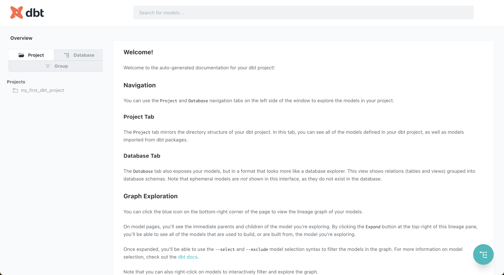

What is dbt?
dbt (data build tools) is an open-source CLI (command line tool) that helps analysts and engineers transform data in their warehouse more effectively (from Wikipedia definition).
Currently, dbt is primarily maintained by dbt Labs, which offers two products:
- dbt-core: the CLI itself that is open-source
- dbt Cloud: instead of managing and hosting yourself dbt-core, it could be handled by dbt team within their Cloud offer
In this article we’ll focus mainly on dbt-core because I personally prefer the self-host approach and also I’ve heard a lot of companies complain regarding pricing models changes from dbt Cloud team that endangered their data stack.
Why should you use dbt?
dbt simplifies data transformation by allowing analysts and engineers to write SQL directly in their warehouse, creating modular, version-controlled, and testable data pipelines that improve collaboration and data quality.
Overview of dbt-core
The idea of dbt-core is pretty simple. It’s a CLI tool that is plugged to your data warehouse thanks to an interpreter (Redshift, Snowflake, Postgresql, etc…) and it’ll interpret your .sql files that can be written in Jinja and will execute the sql directly in your data warehouse.
dbt-core has its own architecture to work that we’ll detail afterwards and needs to respect some rules in order to work.
Here’s a summary of the key features of dbt-core:
- SQL-Driven Transformations: Write transformations in SQL without dealing with complex ETL scripts.
- Lineage: You can have a view on the lineage between your different models.
- Modular and Reusable Code: Use models (SQL files) that reference each other efficiently.
- Version Control & Collaboration: Integrates with Git for better collaboration and versioning.
- Testing & Documentation: Built-in testing capabilities ensure data quality.
- Incremental Processing: Speeds up queries by only updating new or changed data.
- Supports Various Data Warehouses: Works with Snowflake, BigQuery, Redshift, and others.
Why should you choose dbt-core over dbt Cloud?
- Cost Control: dbt-core is free and self-hosted, avoiding potential pricing model changes.
- Flexibility: Full control over infrastructure, deployment, and customization.
- Learning: Provides deeper understanding of data transformation processes.
- Integration: Easily fits into existing DevOps and data engineering workflows.
The primary advantage is granular control and no recurring subscription costs, making it ideal for teams wanting maximum customization and cost-efficiency.
How to Set Up and Run Your First Model
Prerequisites
Before installing dbt-core, ensure you have:
- Python (3.7+) installed
- A data warehouse (e.g., Snowflake, BigQuery, Redshift, Postgres)
Installation
Run the following command to install dbt-core:
pip install dbt-core
For a specific adapter (e.g., Postgres, BigQuery, Snowflake), install it as well:
pip install dbt-postgres # Replace with your warehouse adapter
Initializing a dbt Project
Create a new dbt project by running:
dbt init my_first_dbt_project
Navigate into your project folder:
cd my_first_dbt_project
Configuring dbt Connection
Modify the profiles.yml file to set up your database connection (found in ~/.dbt/profiles.yml). Example for PostgreSQL:
my_first_dbt_project:
target: dev
outputs:
dev:
type: postgres
host: your_host
user: your_user
password: your_password
port: 5432
dbname: your_database
schema: public
Test the connection
You can verify that everything was properly set by executing the following command
dbt debugFor example when I didn’t have installed the dbt-postgres adapter, I got the following error
11:00:20 Running with dbt=1.9.2
11:00:20 dbt version: 1.9.2
11:00:20 python version: 3.11.10
11:00:20 python path: /Users/tutorial/.pyenv/versions/3.11.10/bin/python3.11
11:00:20 os info: macOS-14.5-arm64-arm-64bit
11:00:20 Error importing adapter: No module named 'dbt.adapters.postgres'
11:00:20 Using profiles dir at /Users/tutorial/.dbt
11:00:20 Using profiles.yml file at /Users/tutorial/.dbt/profiles.yml
11:00:20 Using dbt_project.yml file at /Users/tutorial/dbt/beginner/my_first_dbt_project/dbt_project.yml
11:00:20 Configuration:
11:00:20 profiles.yml file [ERROR invalid]
11:00:20 dbt_project.yml file [OK found and valid]
11:00:20 Required dependencies:
11:00:20 - git [OK found]
11:00:20 Connection test skipped since no profile was found
11:00:20 1 check failed:
11:00:20 Profile loading failed for the following reason:
Runtime Error
Credentials in profile "my_first_dbt_project", target "dev" invalid: Runtime Error
Could not find adapter type postgres!After installing the adapter, I got an output that validates the setup of my dbt project
11:01:37 Running with dbt=1.9.2
11:01:37 dbt version: 1.9.2
11:01:37 python version: 3.11.10
11:01:37 python path: /Users/tutorial/.pyenv/versions/3.11.10/bin/python3.11
11:01:37 os info: macOS-14.5-arm64-arm-64bit
11:01:39 Using profiles dir at /Users/tutorial/.dbt
11:01:39 Using profiles.yml file at /Users/tutorial/.dbt/profiles.yml
11:01:39 Using dbt_project.yml file at /Users/tutorial/dbt/beginner/my_first_dbt_project/dbt_project.yml
11:01:39 adapter type: postgres
11:01:39 adapter version: 1.9.0
11:01:39 Configuration:
11:01:39 profiles.yml file [OK found and valid]
11:01:39 dbt_project.yml file [OK found and valid]
11:01:39 Required dependencies:
11:01:39 - git [OK found]
11:01:39 Connection:
11:01:39 host: localhost
11:01:39 port: 5432
11:01:39 user: dbt_user
11:01:39 database: dbt_db
11:01:39 schema: public
11:01:39 connect_timeout: 10
11:01:39 role: None
11:01:39 search_path: None
11:01:39 keepalives_idle: 0
11:01:39 sslmode: None
11:01:39 sslcert: None
11:01:39 sslkey: None
11:01:39 sslrootcert: None
11:01:39 application_name: dbt
11:01:39 retries: 1
11:01:39 Registered adapter: postgres=1.9.0
11:01:39 Connection test: [OK connection ok]
11:01:39 All checks passed!Creating Your First Model
- Navigate to
models/in your project. - Create a new file, e.g.,
my_first_model.sql, and add:
SELECT id, name, created_at
FROM my_schema.raw_users
- Run your model with:
dbt run
This would give you an error:
11:05:38 Running with dbt=1.9.2
11:05:38 Registered adapter: postgres=1.9.0
11:05:38 Unable to do partial parsing because saved manifest not found. Starting full parse.
11:05:39 Found 3 models, 4 data tests, 433 macros
11:05:39
11:05:39 Concurrency: 1 threads (target='dev')
11:05:39
11:05:39 1 of 1 START sql view model public.my_first_model .............................. [RUN]
11:05:39 1 of 1 ERROR creating sql view model public.my_first_model ..................... [ERROR in 0.04s]
11:05:39
11:05:39 Finished running 1 view model in 0 hours 0 minutes and 0.18 seconds (0.18s).
11:05:39
11:05:39 Completed with 1 error, 0 partial successes, and 0 warnings:
11:05:39
11:05:39 Database Error in model my_first_model (models/my_first_model.sql)
relation "my_schema.raw_users" does not exist
LINE 8: FROM my_schema.raw_users
^
compiled code at target/run/my_first_dbt_project/models/my_first_model.sql
11:05:39
11:05:39 Done. PASS=0 WARN=0 ERROR=1 SKIP=0 TOTAL=1If we analyze the sql code, I’m trying to extract the id, name and created_at how the raw_users table that is in my_schema. Since it doesn’t exist in the database I have two possibilities:
4. Add/update the code to the corresponding schema and table
5. Use a seed to convert .csv file to a table that could be used as a reference
For this tutorial, I will create a seed in the seeds folder with some users information (the information were generated by Faker package)
seeds/raw_users.csv
id,name,created_at,email,address
1,Maria Walker,2024-02-19 22:15:48,bkelly@example.net,"958 Richard Lodge, Moranton, ID 09767"
2,Monica Pena,2024-11-02 09:41:14,xbauer@example.com,"4131 Robert Centers Apt. 442, New Danielberg, MS 63624"
3,Alice Bennett,2024-09-10 01:33:52,vparker@example.net,"36549 Santiago Island, Wrightland, NJ 09410"
4,Andrea Higgins,2024-07-17 09:43:59,allenbryan@example.net,"99195 Vanessa Crossing Suite 920, Dennisbury, AZ 22336"Then I need to run this command to create the table
dbt seedAnd it’ll properly create the table
11:13:34 Running with dbt=1.9.2
11:13:35 Registered adapter: postgres=1.9.0
11:13:35 Found 3 models, 4 data tests, 1 seed, 433 macros
11:13:35
11:13:35 Concurrency: 1 threads (target='dev')
11:13:35
11:13:35 1 of 1 START seed file public.raw_users ........................................ [RUN]
11:13:35 1 of 1 OK loaded seed file public.raw_users .................................... [INSERT 50 in 0.10s]
11:13:35
11:13:35 Finished running 1 seed in 0 hours 0 minutes and 0.22 seconds (0.22s).
11:13:35
11:13:35 Completed successfully
11:13:35
11:13:35 Done. PASS=1 WARN=0 ERROR=0 SKIP=0 TOTAL=1Now when I’m running dbt run, it’ll create the model (with is basically a table) without any trouble
11:15:21 Running with dbt=1.9.2
11:15:21 Registered adapter: postgres=1.9.0
11:15:21 Found 3 models, 4 data tests, 1 seed, 433 macros
11:15:21
11:15:21 Concurrency: 1 threads (target='dev')
11:15:21
11:15:21 1 of 1 START sql view model public.my_first_model .............................. [RUN]
11:15:21 1 of 1 OK created sql view model public.my_first_model ......................... [CREATE VIEW in 0.09s]
11:15:21
11:15:21 Finished running 1 view model in 0 hours 0 minutes and 0.22 seconds (0.22s).
11:15:21
11:15:21 Completed successfully
11:15:21
11:15:21 Done. PASS=1 WARN=0 ERROR=0 SKIP=0 TOTAL=1Viewing the result
Now you can connect using the tool of your choice (DBeaver, DataGrip, the UI of BigQuery…) and look at the table

As you can see, I have only the id, name and created_at columns but I can do whatever transformations I would like to do in sql.
Others useful commands
Check the compiled SQL queries
Instead of running the code and creating the tables, you can just compile the code by doing
dbt compileHere the output
dbt compile --select my_first_model
13:05:15 Running with dbt=1.9.2
13:05:16 Registered adapter: postgres=1.9.0
13:05:16 Found 3 models, 4 data tests, 1 seed, 433 macros
13:05:16
13:05:16 Concurrency: 1 threads (target='dev')
13:05:16
Compiled node 'my_first_model' is:
SELECT id, name, created_at
FROM "dbt_db"."public"."raw_users"Generate and see the documentation
To see the generated documentation:
dbt docs generateThen launch an interactive docs site:
dbt docs serveYou can access the website at this URL: http://localhost:8080/#!/overview

If you want to learn more regarding documentation you can look at this part of dbt documentation.
Common Pitfalls and How to Avoid Them
1. Incorrect Database Connection
- Ensure your
profiles.ymlfile is correctly configured. - Test the connection using:
dbt debug
2. Not Using dbt Tests
- Run basic tests to ensure data quality:
-- models/my_model.sql
SELECT id, name FROM usersAdd a test in models/schema.yml:
version: 2
models:
- name: my_model
columns:
- name: id
tests:
- not_nullRun tests:
dbt test3. Slow Query Performance
- Use incremental models to optimize performance:
-- models/incremental_model.sql
{{ config(materialized='incremental', unique_key='id') }}
SELECT id, name, created_at
FROM my_schema.raw_users
WHERE created_at >= (SELECT MAX(created_at) FROM {{ this }})Instead of creating the table from scratch every run the incremental model will just append the new results based on the created_at (or whatever date field you would choose).
4. Not Using Version Control
- Use Git to track dbt changes
5. Ignoring dbt Documentation
- Keep your models well-documented for team collaboration:
models:
- name: my_model
description: "This model cleans and transforms user data."Conclusion
Getting started with dbt-core is straightforward and can significantly improve your data transformation workflow. By following best practices, setting up models correctly, and using dbt’s built-in testing and documentation features, you can build reliable and maintainable data pipelines.
🚀 Next Steps:
- Explore advanced dbt features like macros and Jinja templating.
- Learn about CI/CD integration with dbt.
- Optimize incremental models for large-scale data.
Happy building with dbt! 🎯